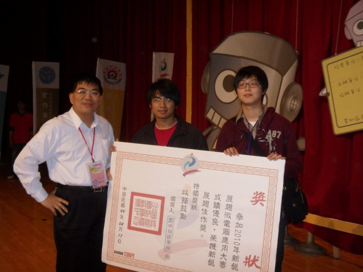
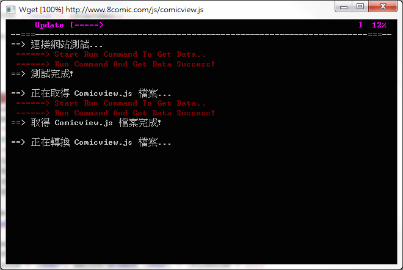
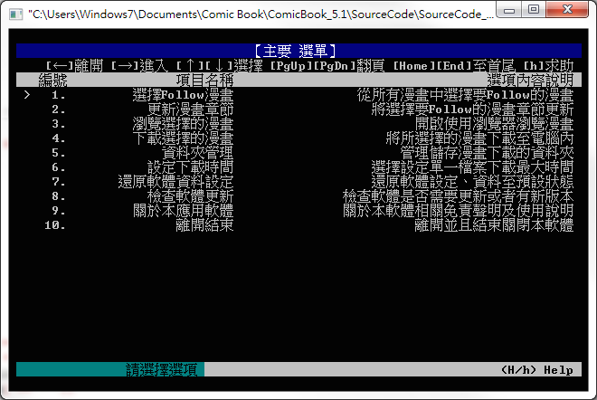
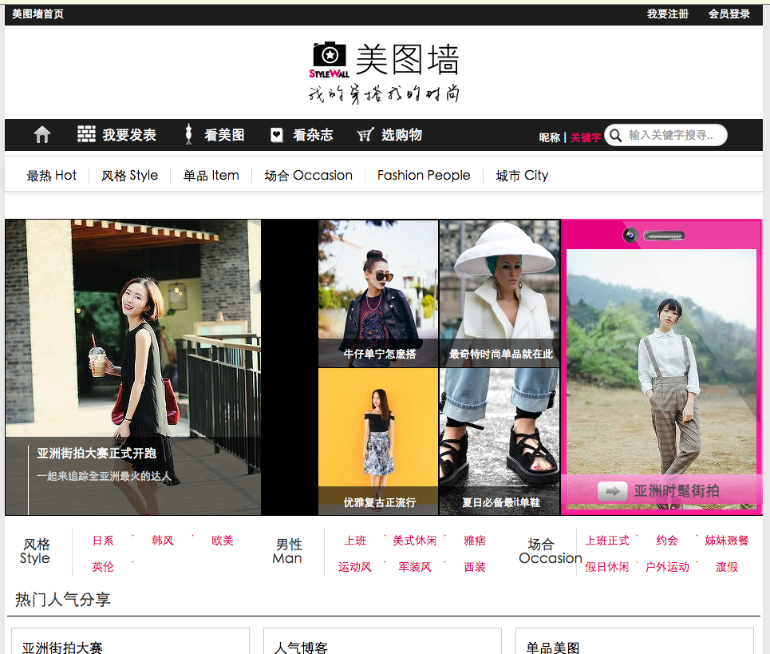

Hi,您好！
請網頁緩緩的往下滑動吧！
中文名字
吳政賢
英文名字
OA Wu
兵役狀況
役畢
出生生日
1989/07/21
電子信箱
comdan66@gmail.com
Hi，您好！
我叫吳政賢 ，2011年畢業於淡江大學資訊工程 學系，主修電腦相關課程，在學期間主要使用的程式語言有 C語言 、Java ，而對於 web 網站開發經驗從大三就有 php 的實作的經驗了!
大學期間總是喜歡實作開發一些有趣的小作品，其中有Java實作的 小畫家、Msn、Assembler、Plurk API 機器人，php、MySQL開發則有 網路相簿、網路空間、部落格 以及些許的 網頁小遊戲...等，而專題當時主要兩部分 1.web討論實作開發、2.Arduino韌體實作 這兩大項。
畢業退伍後，第一份工作是和碩科技 的BIOS工程師 ，由於現今的BIOS多數都已經是UEFI架構 ，所以工作使用的語言為C語言 為主或少許的組合語言，版本管控則是使用 SVN ，這階段由於工作關係所以對於C語言 更加熟悉了，所以做了一個有趣的 漫畫書系統。
第二份工作因為有大學web基礎所以就選擇了風尚科技 的php工程師 ，在這個階段讓我學習到 CodeIgniter 、git 的使用，並且將CodeIgniter修改並開發出多項功能，當時主要維護的網站是FashionGuide的 STYLEWALL 這項產品，這階段獲得最寶貴的經驗則是開發了 多國語系 的國際網站 。
Java 小畫家!
2008/05
這項作品是大一下學期 高等程式設計 學期作業，它讓我對物件導向語言的 封裝 、繼承 、多型 ..等特性更加熟悉!
對於程式設計我喜歡將作品分享，有別於大一上的 C語言，Java 讓我可以更加利用 GUI 的方式實作出我構想中的作品，進而與朋友分享!
如果對此作品有興趣的人非常歡迎 下載原始碼 如果有任何問題，也很歡迎來信。
Java MSN
2008/10
既然會使用了 GUI 物件，那當然就是可以試著寫其他作品啦! 因為發現 Java 有 UDT 、TCP 的 socket 物件可以使用，所以就試著自己完成了簡單版的通訊軟體!
作品中主要利用簡單的 socket 建立起 server 與 client 的機制，Server 主要是將連過來的 client 做溝通，並且建立起 p2p 的連線機制，再加上自己定義的字串流格式達成 client 與 server 之間的溝通。
右上邊的 Demo影片 裡會詳細的展示整個作品重點功能與介紹，歡迎有興趣的人點閱瀏覽! 而它我也提供了有封裝成可執行的 .jar 檔案下載，如果您有任何想法，也歡迎來信!
Java Plurker
2009/04
當噗浪在台灣流行時候，官方提供了各種語言版本的 API，那時候我便借由 Plurk 提供的 Java API 實作 Java GUI 管理軟體。
這次主要功能包含了 軟體安裝、多角色登入、發訊息、回復、智慧回復機器人 ...等，並且這次實作 Java 有了進階的各人突破，為了實作 Java GUI 中 邊框圓滑效果 ，所以實作了 border-radius 物件。
如果有興趣也歡迎 下載原始碼，不過要注意如果要自行 Demo 則需要換上開發者的 Plurk API key。

Java Assembler
2009/05
在⼤二時有一堂課程 系統程式 的作業是需要寫一個 Assembler ，功能主要是將簡單的 SIC XE Literal 的組合語言 編譯成機械語言 ，借由實作這個轉換器的同時，更加的了解組合語言與機械語言間的關係與原理。
當時實作我選擇使用 java 續撰寫，因為其 GUI 物件可以更容易表現出我要的需求，更可以讓使用者更加方便轉換組合語言，所以才選則 java 語言，這邊也是提供 原始碼下載。



Arduino 新銳機器人大賽
2010/04
這是大三下關於 Arduino 的專題，專題中使用了 Arduino 以及多項 Sensor 組合出多功能作品，其中 Arduino 間互相溝通的方式則是使用了 xbee 無線套件 。
作品功能大致上是借由不同 Arduino 所收集到的資訊彙集並且提供給駕駛者車況等安全資訊，所以算是基本版的 智慧型腳踏車 實作。
PHP 相簿
2010/07
因為大三專題有接觸 web 教學討論區的開發，於是在下學期自行開發了一個相簿系統 ，作品同時包含 會員登入、線上人數動態、上傳檔案管控、編輯處理照片 .. 等多項基礎功能。
在這階段，已經對於 php、MySQL、HTML、CSS、jQuery 等 web 語言已有了基礎的熟悉，並且發現 web 作品更能夠分享給朋友。
左邊 Demo影片 會展示出這項作品的各項功能，尤其處理照片、瀏覽照片..等功能，歡迎點閱觀賞。
PHP 空間、部落格
2011/04
這項作品融入了更多的元素，其中包含當時 Facebook layout 、無名部落格結構 、標籤化結構、網路空間、會員系統..等多項功能!
因為上一版的相簿視覺上稍顯陽春，所以這次在 CSS 下了苦工 ，刻意的模仿 FB 的排版方式，並且結合多項 jQuery 的效果。
部落格、相簿、空間的權限限制方式，則參考了無名小站的模式，內容包含了 密碼、好友、指定 、隱私...等功能，並且皆可以做標簽管理。
文章編輯器使用 CKEditor，而相簿與空間接可以使用多檔案上傳 的方式，以方便使用者上傳，管理檔案方式更是參考了 phpMyAdmin 的界面，讓個人的後台機制更加的完善! 左上方的 Demo影片 中會有詳細的作品介紹，歡迎點閱觀賞。
jQuery OA's game
2010/07
在學習 web 開發過程中，總是會有一些有趣的靈感，而我總是喜歡使用我所會的語言工具 ，去將想法實現出來 。
這作品相信大家會有似曾相似感，靈感來自於 Nintendo Pokémon，當初構想曾有過大至商城化、地圖化劇情，但由於多項因素就沒將它完整的完成。
其中個人最滿意的部分是全部網站效果皆由 jQuery 製作，而視覺圖片，則由 小畫家 、PhotoImpact、一個人獨立完成。
左方的 Demo影片 則演釋了整個遊戲的流程，歡迎有興趣者點閱。





C語言 漫畫下載器
2012/11
作品靈感來源只是想方便看漫畫 ，所以動手寫了程式將網站上的圖檔可以選擇性的下載，程式中利用了 SQLite、C語言多重指標、web語言工具.. 等，結合出此作品。

STYLEWALL 首頁

日本版 STYLEWALL

韓國版 STYLEWALL

國際版 STYLEWALL

內地版 STYLEWALL

分享美圖

時尚名人

收藏雜誌
STYLEWALL
2014/07
STYLEWALL主要是一個分享時尚照片的社群網站，其Framework使用CodeIgniter 實作，後期網站的維護主要由我個人獨立完成，當時包含了設計多國結構 、Database規劃 、server機器的處理機制 ..等，所以算是一個特別的經驗。
為了負荷資料變動性極大的社群網站 ，於是利用這次經驗實作了多項CodeIgniter的library、core、controller、cell cache..等規則調整 ，並且加入了phpActiveRecord 來加強CodeIgniter model讓開發速度加快 以及增強維護的效率 ，因為這些練習讓我將CodeIgniter改造成屬於我個人的Framework 。
實作跨國際性 的網站，對於技術而言是項挑戰 更是個寶貴經驗 ，舉凡 AWS的雲端服務、S3空間、內地阿里雲、OSS 都是讓我在這多國語系網站 獲得不少經驗值。

GitHub
2014/7
身為web工程師 ，樂於分享作品 這點應該是大家都有的相同特性吧，所以想必都至少會一個有屬於自己的GitHub頁面吧!
目前包含了一項 MyWall、OA's CodeIgniter、以及這份簡歷原始碼，這些都可以給大家參考，雖然不多但是未來一定會慢慢補充上去！如果有任何問題也歡迎大家來信。之後作品如果有可看性的，也會在GitHub與大家分享。
The End！
謝謝您耐心地將它看完！